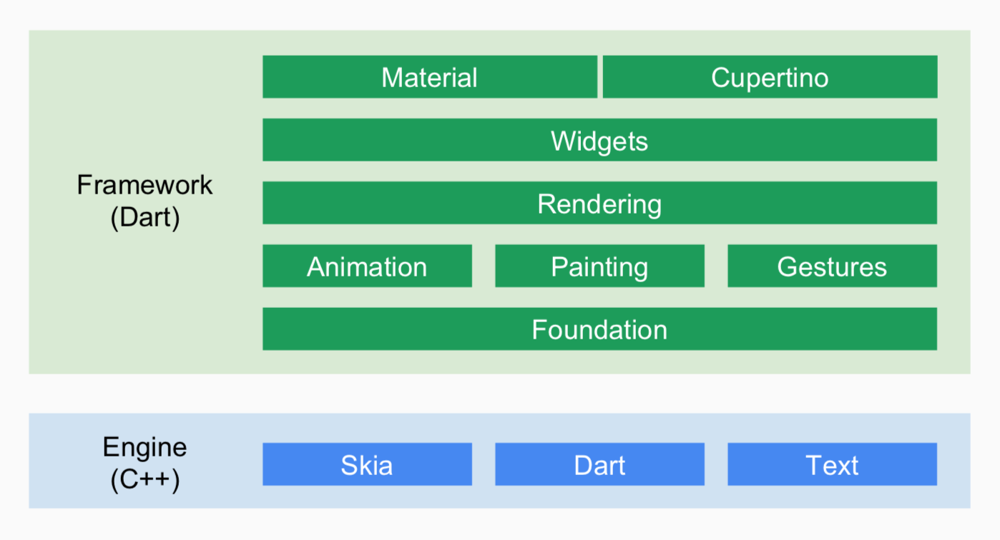
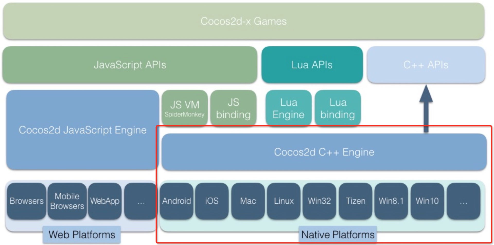
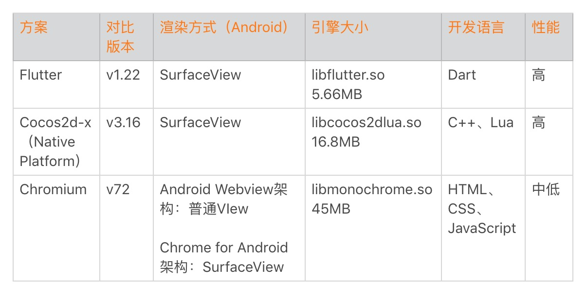
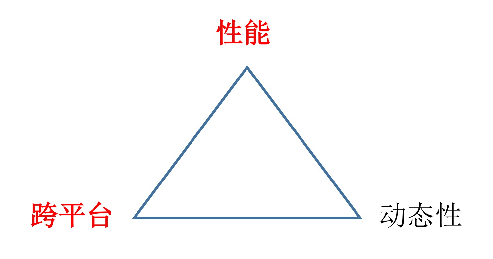
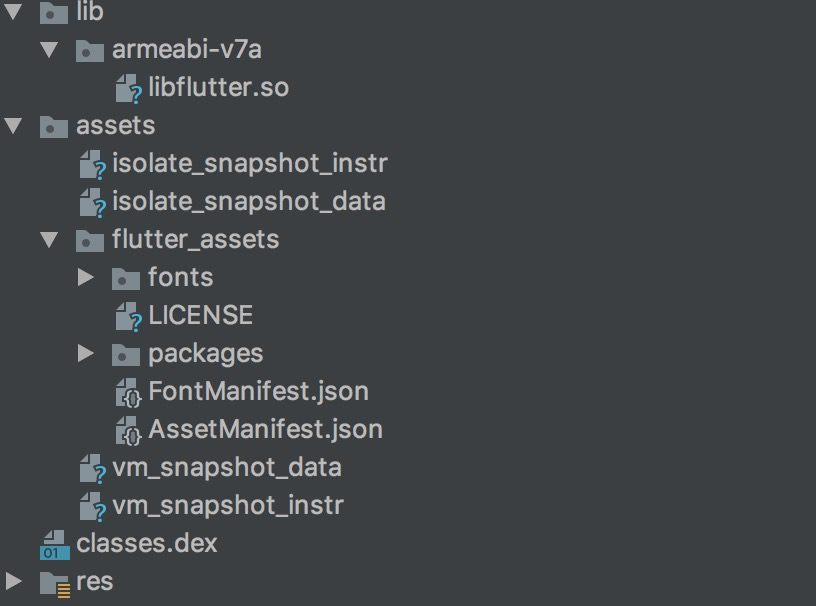
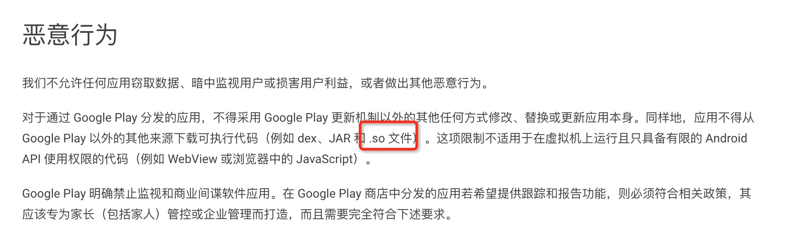
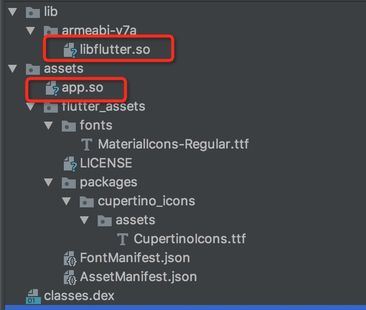
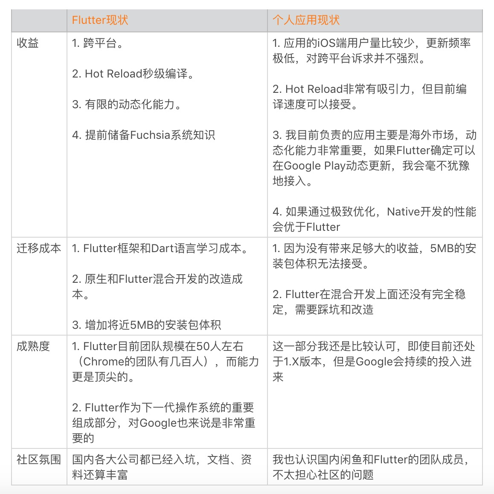
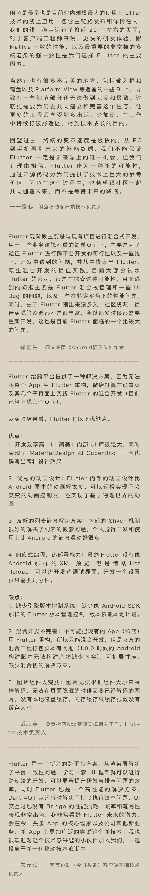

“天下苦秦久矣”，不管是 H5、React Native，还是过去两年火热的小程序，这些跨平台方案在性能和稳定性上总让我们诟病不已。最明显的例子是 React Native 已经发布几年了，却一直还处在 Beta 阶段。
Flutter 作为今年最火热的移动开发新技术，从我们首次看到 Beta 测试版，到 2018 年 12 月的 1.0 正式版，总共才经过了 9 个多月。Flutter 在保持原生性能的前提下实现了跨平台开发，而且更是成为 Google 下一代操作系统 Fuchsia 的 UI 框架，为移动技术的未来发展提供了非常大的想象空间。
高性能、跨平台，而且更是作为 Google 下一个操作系统的重要部分，Flutter 已经有这么多光环加身，那我们是否应该立刻投身这个浪潮之中呢？新的技术、新的框架每一年都在不断涌现，我们又应该如何跟进呢？
Flutter 的前世今生
大部分所谓的“新技术”最终都会被遗忘在历史的长河中，面对新技术，我们首先需要持怀疑态度，在决定是否跟进之前，你需要了解它的方方面面。下面我们就一起来看看 Flutter 的前世今生。
Flutter 的早期开发者 Eric Seidel 曾经参加过一个访谈What is Flutter，在这个访谈中他谈到了当初为什么开发 Flutter，以及 Flutter 的一些设计原则和方向。
Eric Seidel 和 Flutter 早期的几位开发人员都是来自 Chrome 团队，他们在排版和渲染方面具有非常丰富的经验。那为什么要去开发 Flutter？一直以来他们都为浏览器的性能而感到沮丧，有一天他们决定跳出 Web 的范畴，在 Chromium 基础上通过删除大量的代码，抛弃 Web 的兼容性，竟然发现性能是之前的 20 倍。对此我也深有感触，最近半年也一直在做主 App 的 Lite 版本，安装包也从 42MB 降到 8MB，通过删除大量的历史业务，性能比主包要好太多太多。
正如访谈中所说，Flutter 是一个 Google 内部孵化多年的产品，从它开发之初到现在，一直秉承着两个最重要的设计原则：
-
性能至上。内置布局和渲染引擎，使用 Skia 通过 GPU 做光栅化。选择 Dart 语言作为开发语言，在发布正式版本时使用 AOT 编译，不再需要通过解析器解释执行或者 JIT。并且支持 Tree Shaking 无用代码删除，减少发布包的体积。
-
效率至上。在开发阶段支持代码的Hot Reload，实现秒级编译更新。重视开发工具链，从开发、调试、测试、性能分析都有完善的工具。内置 Runtime 实现真正的跨平台，一套代码可以同时生成 Android/iOS 应用，降低开发成本。
那为什么要选择 Dart 语言？“Dart 团队办公室离 Flutter 团队最近”肯定是其中的一个原因，但是 Dart 也为 Flutter 追求性能和效率的道路提供了大量的帮助，比如 AOT 编译、Tree Shaking、Hot Reload、多生代无锁垃圾回收等。正因为这些特性，Flutter 在筛选了多种语言后，最终选择了 Dart。这里也推荐你阅读Why Flutter Uses Dart这篇文章。
总的来说，Flutter 是一个内置了布局和渲染引擎，使用 Dart 作为开发语言，采用 React 方式编写 UI，支持一套代码在多端运行的框架。但是正如专栏前面所说的，大前端时代的核心诉求是跨平台和动态化，下面我们就一起来看看 Flutter 在这两方面的表现。
1. Flutter 的跨平台开发
虽然 React Native/Weex 使用了系统原生 UI 组件，通过原生渲染的方式来提升渲染速度和 UI 流畅度，但是因为 JS 执行效率、JSBridge 的通信代价等因素，性能依然存在瓶颈，而且我们也无法抹平不同系统的平台差异，因此这样的跨平台方案注定艰难。

正如 Eric Seidel 在访谈所说，Flutter 是从浏览器引擎简化而来，无论是它的布局引擎（例如也是使用 CSS Flexbox 布局），还是渲染流水线的设计，都跟浏览器都有很多相似之处。但是它抛弃了浏览器沉重的历史包袱和 Web 的兼容性，实现了在保持性能的前提下实现跨平台开发。
回想一下在专栏第 37 期《工作三年半，移动开发转型手游开发》中，我们还描述过另外一套内置 Runtime 的跨平台方案：Cocos 引擎。

在我看来，Cocos 和 Unity 这些游戏引擎才是最早并且成熟的跨平台框架，它们对性能的要求也更加苛刻。即使是“王者荣耀”和“吃鸡”这么复杂的游戏，我们也可以做得非常流畅。
Flutter 和游戏引擎一样，也提供了一套自绘界面的 UI Toolkit。游戏引擎虽然能实现跨平台开发，但它致力于服务更有“钱途”的游戏开发。游戏引擎对于 App 开发，特别是混合开发支持并不完善。
如下图所示，我们可以看到三种跨平台方案的对比，Flutter 可以说是三者中最为轻量的。

2. Flutter 的动态化实践
在专栏第 40 期《动态化实践，如何选择适合自己的方案》中，我提到了一个观点：“相比跨平台能力，国内对大前端的动态化能力更加偏执”。
在性能、跨平台、动态性这个铁三角中，我们不能同时将三个都做到最优。如果 Flutter 在性能、跨平台和动态性都比浏览器更好，那就不会出现 Flutter 这个框架了，而是成为 Chromium 的一个跨时代版本。

浏览器选择的是跨平台和动态性，而 Flutter 选择的就是性能和跨平台。Flutter 正是牺牲了 Web 的动态性，使用 Dart 语言的 AOT 编译，使用只有 5MB 的轻量级引擎，才能实现浏览器做不到的高性能。Flutter 的第一波受众是 Android 上使用 Java、Kotlin，iOS 上使用 Objective-C、Swift 的 Native 开发。未来 Flutter 是否能以此为突破口，进一步蚕食 Web 领域的份额，现在还不得而知。
那 Flutter 是否支持动态更新呢？由于编译成 AOT 代码，在 iOS 是绝对不可以动态更新的。对于 Android，Flutter 的动态更新能力其实 Tinker 就已经实现了。从官方的提供方案来看，其实也只是替换下面的变化文件，可以说是 Tinker 的简化版。

官方的动态修复方案可以说是非常鸡肋的，并且也是要求应用重启才能生效。如果同时修改了 Native 代码，这也是不支持的。
更进一步说，Flutter 在 Google Play 上是否允许动态更新也是抱有疑问的。从 Google Play 上面的开发者政策中心规定上看，在 Google Play 也是不允许动态更新可执行文件。

从《从 Flutter 的编译模式》一文中，我们可以通过“flutter build apk --build-shared-library”将 Dart 代码编译成 app.so。无论是 libflutter.so，还是 app.so（其实 vm_*、isolate_* 也是可执行文件）的动态更新，都违反了 Google Play 的政策。

当然不排除 Google 为了推广 Flutter，为它的动态更新开绿灯。最近我也在咨询 Google Play 的政策组，目前还没有收到答复，如果后续有进一步的结果，我也可以同步给各位同学。
总的来说，Flutter 的动态化能力理论上只能通过 JIT 编译模式解决，但是这会带来性能和代码体积的巨大影响。当然，闲鱼也在探索一套 Flutter 的布局动态化方案，你可以参考文章《Flutter 动态化的方案对比及最佳实现》。
面对新技术，该如何选择
通过上面的学习，我们总算对 Flutter 的方方面面都有所了解。可以说 Flutter 是一个性能和效率至上，但是动态化能力非常有限的的框架。
目前闲鱼 App、美团外卖、今日头条 App、爱奇艺开播助手、网易新闻客户端、京东JDFlutter、马蜂窝旅游 App，都分享过他们在使用 Flutter 的一些心得体会。如果有兴趣接入 Flutter，非常推荐你认真看看前人的经验和教训。
无论是 Flutter，还是其他新的技术，在抉择是否跟进的时候，我们需要考虑以下一些因素：
-
收益。接入新的技术或者框架，给我们带来什么收益，例如稳定性、性能、效率、安全性等方面的提升。
-
迁移成本。如果想得到新技术带来的收益，需要我们付出什么代价，例如新技术的学习成本、原来架构的改造成本等。
-
成熟度。简单来说，就是这个新技术是否靠谱。跟选择开源项目一样，团队规模、能力是否达标、对项目是否重视都是我们需要考虑的因素。
-
社区氛围。主要是看跟进这个技术的人够不够多、文档资料是否丰富、遇到问题能否得到帮助等。
1. 对于 Flutter，我是怎么看的
Flutter 是一个非常有前景的技术，这一点是毋庸置疑的。我曾经专门做过一次全面的评估分析，但是得出的结论是暂时不会在我负责的应用中接入，主要原因如下。

目前我还没有跟进 Flutter 的核心原因在于收益不够巨大，如果有足够大的收益，其他几个因素都不是问题。而我负责的应用目前使用 H5、小程序作为跨平台和动态化方案，通过极致优化后性能基本可以符合要求。
从另外一方面来说，新技术的学习和引入，无论是对历史代码、架构，还是我们个人的知识体系，都是一次非常好的重构机会。我非常希望每过一段时间，可以引入一些新的东西，打破大家对现有架构的不满。
新的技术或多或少有很多不完善的地方，这是挑战，也是机会。通过克服一个又一个的困难和挑战，并且在过程中不断地总结和沉淀，我们最终可能还收获了团队成员技术和其他能力的成长。以闲鱼为例，他们在 Flutter 落地的同时，不仅将他们的经验总结成几十篇非常高质量的文章，而且也参加了 QCon、GMTC 等一些技术大会，同时开源了fish-redux、FlutterBoost等几个开源库，Flutter 也一下成为了闲鱼的技术品牌。
可以相信，在过去一年，闲鱼团队在共同攻坚 Flutter 一个又一个难题的过程中，无论是团队的士气还是团队技术和非技术上的能力，都会有非常大的进步。
2. 对于 Flutter，大家又是怎么看的
由于我还并没有在实际项目中使用 Flutter，所以在写今天的文章之前，我也请教了很多有实际应用经验的朋友，下面我们一起来看看他们对 Flutter 又是怎么看的。

总结
曾几何时，我们一直对 Chromium 庞大的代码无从入手。而 Flutter 是一个完整而且比 Webkit 简单很多的引擎，它内部涉及从 CPU 到 GPU，从上层到硬件的一系列知识，源码中有非常多值得我们挖掘去学习和研究的地方。
未来 Flutter 应用在小程序中也是一个非常有趣的课题，我们可以直接使用或者参考 Flutter 实现一个小程序渲染引擎。这样还可以带来另外一个好处，一个功能（例如微信的“附近的餐厅”）在不成熟的时候可以先以小程序的方式尝试，等到这个功能稳定之后，我们又可以无成本的转化为应用内的代码。
Dart 语言从 2011 年启动以来，一直想以高性能为卖点，试图取代 JS，但是长期以来在 Google 外部使用的并不多。那在 Flutter 的这个契机下，它未来是否可以实现弯道超车呢？这件事给我最大的感触是，机会可能随时会出现，但是需要我们时刻准备好。
“打铁还需自身硬”，我们还是要坚持修炼内功。对于是否要学习 Flutter，我的答案是“多说无益，实践至上”。
课后作业
对于 Flutter，你有什么看法？你是否准备在你的应用中跟进？欢迎留言跟我和其他同学一起讨论。
Flutter 作为今年最为火热的技术，里面有非常多的机遇，可以帮我们打造自己的技术品牌（例如撰写文章、参加技术会议、开源你的项目等）。对于 Flutter 的学习，你可以参考下面的一些资料。
COMMUNITY NOTES
读者评论
字节跳动客户端基础技术负责人元硕招聘啦，有兴趣的高手们可以尝试一下，字节跳动(今日头条)客户端，邮箱: zhuyuanshuo@bytedance.com
最近也在学习Flutter，对没有像Android一样，将UI布局写成单独的XML文件，做到UI和逻辑的分离，用的很不爽
去年在团队引入，实现了结合当前插件加载框架，实现以插件的形式加载起来。实现了一个完整的Flutter业务插件。但苦于人力支持不足，灰度测试阶段，一直没上线...
多说无益.实践至上.跟邵文老师学习到现在.不仅获得了很多实实在在的干货.而且开了很多眼界.继续努力.向邵文老师学习.加油加油送给自己
说说自己在实践中碰到的几个问题：1、官方推出的混合开发方案侵入性较强，业内偏爱闲鱼的方案，但是要有hack精神、肯折腾。2、对iOS的支持真心差，Flutter Engine的初始化和ViewController的创建有冲突，而且还有很多内存泄漏问题3、图片加载问题比较多，除了文中提到的没有磁盘缓存外，还有就是内存缓存回收不及时导致内存占用很高，在iOS平台上问题尤为严重。4、很多需要访问底层接口的功能仍然要借助插件来完成，这块会多很多工作量。
跟大佬们简单对比一下就深刻的认识到了自己的不足，接触flutter两个月时间，对其认知还是不够深入，得加把劲了
期待很久的文章！对于要不要学 flutter，多想无益，干就是了